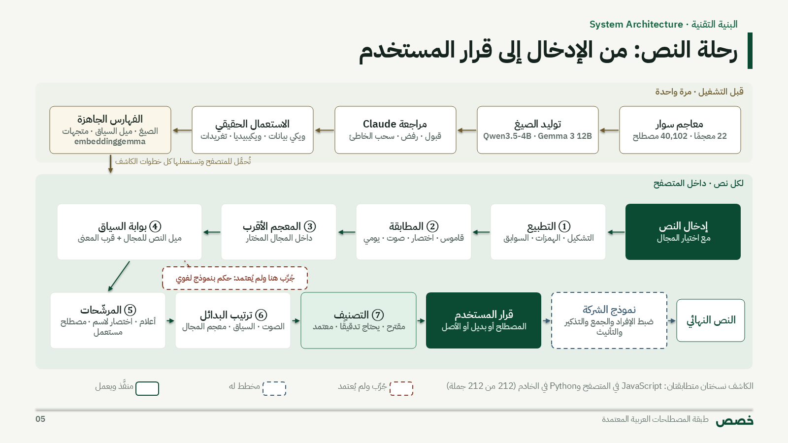

مجلة اللغويات الحاسوبية والمعالجة الآلية للغة العربية
المجلد [ ] · العدد [ ] · [السنة] — بيانات النشر تُستكمل عند القبول
بحث أصيل
Kass: An Arabic Terminology Layer that Suggests SIWAR Standard Terms and Unifies Terms within a Text
[الجهة] · [البريد الإلكتروني] · النظام المنشور: https://kass.arai.center
الملخص. يكتب غير المتخصصين النصوص التقنية والقانونية والمالية بألفاظ معرّبة («المودل»)، واختصارات إنجليزية («LLM»)، وكلمات عامية أو عامة («عميل» بمعنى وكيل ذكي)، مع أن لهذه المفاهيم مصطلحات عربية معتمدة في معاجم سِوار. نقدّم «خصص»، وهي طبقة مصطلحية تعمل في وضع الاقتراح: تكتشف هذه الألفاظ في النص، وتقترح المقابل المعتمد من 40,102 مصطلح في 22 معجمًا، وتترك القرار للمستخدم. بنينا فهرس صيغ فيه 126,141 صيغة بعد إثراء المعاجم بـ 87,449 صيغة بديلة، ثم صممنا كاشفًا هجينًا يجمع المطابقة المعجمية والصوتية والصرفية، وبوابة سياق للكلمات العربية العامة تعتمد على ميل النص إلى المجال من إحصاءات ويكيبيديا العربية وعلى قرب المعنى بمتجهات EmbeddingGemma، ولا يُستدعى نموذج لغوي وقت التحليل. على ست مجموعات اختبار (212 جملة) بلغت دقة الاقتراحات المؤكدة 90.9%، ودقة الاقتراحات التي تحتاج تدقيقًا 77.7%. وعلى مقالات حقيقية جديدة كانت الاقتراحات المؤكدة صحيحة 15 من 15، ودقة طبقة التدقيق نحو 74%. أما نموذجا Gemma 3 12B وClef-Flash، حين حكما على السياق، فلم تتجاوز دقة كل منهما 62% على 600 حالة قرار، فلم يُعتمدا. ونقدم أيضًا آلية لتوحيد المصطلح داخل النص الواحد بلغت دقتها 100% واستدعاؤها بين 67% و71% على مجموعتي اختبار. وتعمل الطبقة كلها داخل المتصفح في أقل من 0.02 ثانية لفقرة من ألف حرف.
الكلمات المفتاحية: المصطلحات العربية، تطبيع المصطلحات، معاجم سِوار، تحديد المعنى من السياق، توحيد المصطلحات، الكتابة التخصصية.
Abstract. Non-specialists write technical, legal and financial Arabic with transliterated loanwords («المودل», model), English abbreviations (LLM) and everyday words used in a specialist sense («عميل», client, for intelligent agent), although these concepts have standard Arabic terms in the SIWAR dictionaries. We present Kass, a terminology layer that works in suggestion mode: it finds such words, proposes the standard term from 40,102 senses in 22 dictionaries, and leaves the decision to the user. We built an index of 126,141 forms after enriching the dictionaries with 87,449 variants, and designed a hybrid detector that combines lexical, phonetic and morphological matching with a context gate for everyday Arabic words, based on how strongly the surrounding text leans to the chosen domain (Arabic Wikipedia statistics) and on meaning closeness with EmbeddingGemma vectors; no language model runs at analysis time. On six test sets (212 sentences), confident suggestions reach 90.9% precision and suggestions marked for review 77.7%; on new real articles confident suggestions were right 15 of 15 times and the review tier about 74%. Gemma 3 12B and Clef-Flash, used as context judges, stayed below 62% precision on 600 decision cases and were not adopted. We also present in-text term unification, with 100% precision and 67–71% recall on two test sets. The whole layer runs in the browser in under 0.02 s for a 1,000-character paragraph.
Keywords: Arabic terminology, terminology normalization, SIWAR, word sense disambiguation, term consistency, specialist writing.
تُنشر في العربية اليوم نصوص تخصصية كثيرة يكتبها غير المختصين في المصطلح: تقارير تقنية، ومنشورات إعلامية، ومراسلات إدارية، وعقود. وتشيع فيها ثلاثة أنماط من الألفاظ غير المعيارية: المعرّب الصوتي («المودل»، «الداتا»، «السيرفر»)، والاختصار أو اللفظ الإنجليزي («LLM»، «API»)، والكلمة العربية العامة التي يقصد بها الكاتب مفهومًا تخصصيًا («عميل ذكي» بمعنى «وكيل ذكي»). ولهذه المفاهيم مقابلات معتمدة في معاجم منصة سِوار، لكن الكاتب لا يعرفها في الغالب، أو لا يجدها في الوقت المناسب.
تبدو المهمة استبدالًا بسيطًا، لكنها ليست كذلك لثلاثة أسباب. الأول أن الصيغة الواحدة قد تقابل أكثر من مصطلح: «الفيوز» قد تكون «المصهر» في دائرة كهربائية، أو «فتيلة انفجار» في قذيفة. الثاني أن الكلمة العربية العامة لها معنى يومي في أغلب استعمالاتها: «العميل» في «وقّع العميل العقد مع البنك» زبون لا وكيل ذكي. الثالث أن الاستبدال الحرفي في العربية يكسر الصرف: العدد، والجنس، والتعريف، والضمائر المتصلة. وهذا ما وجده Liu et al. (2025) حين قارنوا الاستبدال المباشر للمصطلحات بإعادة التنقيح بنموذج لغوي، فكان الاستبدال المباشر أضعف في العربية لغناها الصرفي.
تقدم هذه الورقة «خصص» (Kass Layer)، وهي طبقة تعمل فوق نص المستخدم في وضع الاقتراح فقط: تبرز اللفظ، وتعرض المصطلح المعتمد وتعريفه ومعجمه ومقابله الإنجليزي، وتصنّف الاقتراح إلى «مقترح» أو «يحتاج تدقيقًا» مع ذكر السبب، ولا يتغير النص إلا باختيار المستخدم.
المساهمات.
/analyse و/unify) معدّة لربطها بنموذج لغوي عربي. يقتصر دور هذا النموذج على ضبط العدد والجنس بعد إدراج المصطلح.أقرب الأعمال إلى مشكلتنا ما يُسمى تطبيع المصطلحات: ربط تعبير غير معياري بمصطلح في قاعدة مصطلحات. قدّم Fan et al. (2025) إطارًا بلا ضبط دقيق لتطبيع المصطلحات الطبية في وسائل التواصل. يوسّع الإطار التعبيرات القصيرة الغامضة إلى أوصاف أغنى بالاسترجاع المعزز، ثم تتعاون فيه عدة وكلاء من النماذج اللغوية على الاسترجاع والترتيب وإعادة الترتيب. تفاوتت دقته بين 88.54% و90.84% على مجموعتين، ولم تتجاوز 52.28% على مجموعة TwADR-L. ويبيّن هذا التفاوت صعوبة النصوص الاجتماعية القصيرة، وهي صعوبة وجدناها أيضًا في التغريدات (القسم 6). وعالج Fan et al. (2024) في RRNorm التعبيرات المركبة التي تحمل أكثر من مفهوم، فيفكّكها إلى وحدات بسيطة بنموذج لغوي قبل الاسترجاع والترتيب. أما MASRAD (Nasser et al., 2025) فبنى مدونة عربية لأزواج المصطلحات الأجنبية ومقابلاتها من كتب أكاديمية. استخرج النظام لكل زوج مرشح سمات تشابه معجمية وصوتية وصرفية ودلالية، ثم جمعها بتعلم الآلة فبلغت الدقة 90.5% والاستدعاء 92.4%. ونأخذ من MASRAD أن التشابه الدلالي وحده لا يكفي، وأن الجمع بين الإشارات المعجمية والصوتية والصرفية والدلالية أدق. لكن MASRAD يفترض أن المقابل العربي مكتوب بجوار المصطلح الأجنبي في النص، بينما نسترجع نحن المصطلح المعتمد من مورد خارجي حين لا يكون في النص أصلًا.
بنى Haidar et al. (2026) نظام ArBoBIM لأتمتة فهارس الكتب العربية. يجد النظام مواضع مصطلح معروف داخل الكتاب حتى لو تغيرت صياغته، بالجمع بين المطابقة الحرفية والتشابه الصرفي المعجمي والتشابه الدلالي. أعطت المطابقة الحرفية وحدها دقة عالية واستدعاءً منخفضًا، ورفعت إضافة التشابه الدلالي الاستدعاء إلى 0.91، فبلغ F1 مقدار 0.94 بكلفة حسابية أقل من النماذج اللغوية الكبيرة. وأظهر Alakeel et al. (2026) أن مطابقة المقسِّم للبنية الصرفية العربية لا تضمن قدرة النموذج على توليد الصيغ ولا تشترطها. ونستنتج من ذلك أن فهم شكل الكلمة لا يساوي فهم معناها، وأن النظام يحتاج الصرف والمعجم والسياق معًا.
قيّم Noureldien et al. (2025) نماذج لغوية توليدية في تحديد معنى الكلمة العربية من سياقها. بلغت دقة GPT-4o دون تدريب نحو 79%، وكانت النماذج المفتوحة المتوسطة أضعف دون تدريب. فلما ضُبطت بدقة تجاوزت 88%، وانخفضت الدقة كلما زاد عدد المعاني المحتملة. ووفرت مهمة KSAA-CAD المشتركة (Alshammari et al., 2024) مهمتي القاموس العكسي وتحديد المعنى على المعجم العربي المعاصر، وصاغت تحديد المعنى مقارنةً بين السياق والتعريف المعجمي. واستعمل Malaysha et al. (2024) تشابه جيب التمام بين تمثيلات AraBERT دون تدريب، فحلّوا الأول في قياس الارتباط الدلالي بين جمل الفصحى. لكن معامل ارتباطهم كان 0.49، وهذا يذكّر بأن الارتباط في الموضوع غير الترادف في المعنى. وعلى هذه الأعمال بنينا بوابة السياق (القسم 4.4)، وجرّبنا مقارنة الجملة بتعريف المصطلح (القسم 7).
درس Alhafni et al. (2024) تحويل الكتابة اللهجية إلى إملاء موحّد (CODA) على خمس لهجات، فوجدوا أن إعطاء النموذج معلومة اللهجة يحسّن الأداء في اللهجات كلها. ويوافق ذلك تصميم خصص الذي يطلب من المستخدم اختيار المجال قبل التحليل، فتُحصر المعاجم المرشحة وتُرجَّح بها البدائل.
بنى Liu et al. (2025) مورد GIST لنحو خمسة آلاف مصطلح في الذكاء الاصطناعي بخمس لغات منها العربية. ووجدوا أن إعادة تنقيح الترجمة بنموذج لغوي يُعطى المصطلحات المعتمدة أنجح من الاستبدال المباشر، ولا سيما في العربية. وأظهر Punzi Zarino & Sánchez Gijón (2026) أن حقن المصطلحات في التعليمات ثم فرضها بقواعد بعد التوليد يرفعان التزام النموذج بالمصطلح المعتمد. وحذّر Dahan et al. (2026) من الإفراط في التوحيد: تقييد الترجمة بقائمة مصطلحات يرفع الدقة والاتساق، لكنه يزيل اختلافات صحيحة يستعملها المترجمون البشر. ولذلك جعلنا خصص يقترح ولا يفرض، واستبعدنا التصريف والإحالة المختصرة من التوحيد (القسم 4.7). أما ضبط الأسلوب وإعادة الصياغة (Hamed et al., 2026)، فخارج نطاق الطبقة عمدًا.
خصص لا يدرّب نموذجًا، ولا يستدعي نموذجًا لغويًا وقت التحليل. يبني موردًا مُثرى مرة واحدة، ثم يطبّق قرارات قابلة للتفسير، لكل منها سبب يُعرض للمستخدم. وهو أقرب إلى أنظمة المطابقة الهجينة الخفيفة (MASRAD وArBoBIM) منه إلى أطر الوكلاء اللغوية (Fan et al., 2025). وهذا خيار فرضته القيود، إذ لا يوجد خادم بكرت رسومي، وفرضه أيضًا الحرص على الخصوصية وانخفاض الكلفة. ونترك للنموذج اللغوي مرحلة لاحقة محدودة: ضبط الصيغة النحوية بعد اختيار المستخدم للمصطلح.
استخرجنا 22 معجمًا كاملًا من منصة سِوار: 37,124 مدخلًا و40,102 معنى، لكل معنى المصطلح العربي وتعريفه ومقابله الإنجليزي إن وُجد. وتغطي المعاجم مجالات منها البيانات والذكاء الاصطناعي، والحكومة الرقمية، والقانون، والعقود والمشتريات، والمالية والاقتصاد، والإعلام، والطاقة، والطيران والفضاء، والسيارات الكهربائية، والرياضة، والإحصاء، والإدارة، والموارد البشرية. وجمعنا المعاجم في ستة مجالات يختار المستخدم منها: قانوني، وتقني، ومالي، وإعلامي، وهندسي، وثقافي. ولم تُعدَّل ملفات المعاجم الأصلية في أي مرحلة، فكل إثراء محفوظ في ملفات منفصلة.
أُثري المورد على عدة جولات، يقترح فيها نموذج مفتوح صيغًا ويراجعها Claude، ثم تُدقق الروابط الضعيفة:
بلغ مجموع الصيغ 87,449 صيغة، منها 50,696 مقبولة و36,753 «تحتاج تدقيقًا». وأغلب الصنف الثاني (34,494) صيغ اقتُرحت لأكثر من مصطلح، فلا تُستبدل تلقائيًا أبدًا. ويوضح الجدول 1 توزيع الصيغ حسب النوع.
| النوع | العدد | مثال |
|---|---|---|
| صيغة إنجليزية | 61,498 | model ← نموذج |
| مرادف غير رسمي | 13,334 | عميل ذكي ← وكيل ذكي |
| اختصار | 5,711 | LLM ← نموذج لغوي كبير |
| كتابة صوتية (معرّب) | 3,744 | المودل ← نموذج |
| إملاء آخر | 1,739 | دارة كهربائية ← دائرة كهربائية |
| عامية | 1,423 | بلنتي ← ركلة جزاء |
الجدول 1: الصيغ البديلة في المورد المُثرى حسب النوع.
الرابط الخاطئ بين صيغة ومصطلح يولّد اقتراحات خاطئة في كل نص تظهر فيه الصيغة، فدققنا الروابط بثلاث طرق:
| المجموعة | الحجم | الغرض |
|---|---|---|
| ست مجموعات اختبار (ضبط، مستقلة 1، مستقلة 2، غموض، كلمات عربية ضبط، كلمات عربية مستقلة) | 212 جملة | قياس الاستدعاء والدقة |
| مقالات حقيقية منشورة، في ثلاث دفعات | 16 + 6 + 9 مقالات | دقة الطبقتين على نص حر |
| تغريدات حقيقية، واحدة لكل صيغة مُعدَّنة | 310 تغريدة | اختبار قاسٍ متعمد |
| مراجعة بشرية لعينة عشوائية | 50 حكمًا | قياس اتفاق أحكام Claude مع البشر |
| حالات قرار (نصفها يجب استبداله) | 600 حالة | تقييم النموذج اللغوي حكمًا |
| مجموعتا توحيد (ضبط، مستقلة) | 16 + 10 نصوص | تقييم التوحيد داخل النص |
الجدول 2: بيانات التقييم.
تسجّل كل جملة في مجموعات الاختبار الكلمات المطلوبة والمصطلح الصحيح لكل منها. وأضفنا حقلًا للإجابات الصحيحة غير المسجلة، فيه 19 إجابة، مثل «الكود» ← «الشفرات المصدرية». السبب أن الجملة الواحدة قد تحتمل أكثر من اقتراح صحيح، وكان يُحسب خطأً.
للطبقة مرحلتان (الشكل 1). مرحلة البناء تجري مرة واحدة: تستخرج المعاجم، وتثريها، وتراجعها، ثم تبني ثلاثة فهارس. ومرحلة التشغيل تجري لكل نص داخل المتصفح، وتمر بسبع خطوات حتمية. الكاشف مكتوب مرتين بالمنطق نفسه: بـ JavaScript للصفحة، وببايثون للواجهة البرمجية. ويتحقق اختبار تطابق من أن النسختين تعطيان المخرجات نفسها على كل جمل الاختبار (238 من 238).

الشكل 1: بنية طبقة خصص: مرحلة البناء (أعلى) ومرحلة التشغيل لكل نص (أسفل).
التطبيع: تُزال الحركات والتطويل، وتوحَّد الهمزات والألف المقصورة والتاء المربوطة، وتُحذف علامات الترقيم. وتُفصل السوابق (و، ف، ب، ل، ك، ال) واللواحق (علامات الجمع، والضمائر المتصلة، وجمع الإنجليزية «ز» و«س» كما في «مودلز»)، ويُحتفظ بها لإعادتها عند الاستبدال.
المطابقة: تُبحث كل عبارة في فهرس الصيغ، من أطولها إلى أقصرها، فتُطابق «عميل ذكي» قبل «عميل». فإن لم توجد العبارة جُرّبت ثلاث طرق احتياطية:
وتعدّ الطبقة الكلمة معرّبة بقواعد مستخلصة من المعاجم، منها:
المعجم الأقرب: تصوّت المصطلحات التي وُجدت في النص لمعاجمها، بوزن أقل للمصطلحات المعتمدة المفردة. فيُعرف المعجم الأقرب داخل المجال المختار، مثل البيانات والذكاء الاصطناعي بنسبة 83% مقابل الحكومة الرقمية بنسبة 17% في مثال الشكل 1، ويُرجَّح مصطلحه عند التعارض.
بوابة السياق: لا تمر بها إلا الكلمة العربية العامة. أما المعرّب والاختصار والإنجليزي فلا معنى آخر لها. وتحسب البوابة إشارتين:
وقاعدة القبول كما يلي:
مثال ذلك:
وتُرفض في البوابة حالتان أخريان:
أُضيفت كل قاعدة حذف بعد خطأ حقيقي وُجد في الاختبارات أو في المقالات:
الترتيب: إذا طابقت الصيغة أكثر من مصطلح، رُتّب المرشحون بمجموع خطي من ست إشارات:
مثال ذلك أن «الفيوز» في «ركبنا الفيوز في الدائرة الكهربائية للسيارة» ترتّب «المصهر» أولًا، ثم «فتيلة انفجار»، ثم «صهيرة».
التصنيف: لكل اقتراح واحد من ثلاثة مستويات:
ولا يُطبَّق آليًا إلا «مقترح»، وبضغطة المستخدم على «استبدال كل المقترح». أما الاستبدال نفسه فيعيد السوابق والضمائر إلى المصطلح، فتصير «للمودل» «للنموذج». وإذا وردت الصيغة بالجمع نُبّه المستخدم إلى مراجعة صيغة المصطلح بعد الاستبدال.
اتبعنا هنا ما تفعله أدوات ضبط المصطلحات: المعجم أولًا، ثم الصيغ الإملائية، ولا دمج بقرب المتجهات وحده. والسبب أن المتجهات تقرّب الكلمات المترابطة والمتضادة أيضًا، مثل «البائع» و«المشتري». وللتوحيد مساران:
ولا تُعدّ مجموعة:
ويطبّق زر «توحيد» الصيغة المختارة في كل المواضع، مع إبقاء «و» و«ال» الملتصقتين بالكلمة.
استنادًا إلى Liu et al. (2025) وPunzi Zarino & Sánchez Gijón (2026)، يُربط نموذج لغوي عربي بعد قرار المستخدم فقط. ودوره محصور في ضبط الإفراد والجمع والتذكير والتأنيث بعد إدراج المصطلح، دون اختيار المصطلح أو إعادة الصياغة. مثال: «درّبنا المودلز الكبيرة» تصير بعد الإدراج «درّبنا النموذج الكبيرة»، ثم يصححها النموذج إلى «درّبنا النماذج الكبيرة». ويتحقق فاحص حتمي بعد ذلك من أن النموذج لم يغيّر غير ذلك.
المقاييس:
بروتوكول الحكم: حكم Claude على المقالات والتغريدات قبل تشغيل الكاشف عليها، واختبرنا هذه الأحكام بمراجعة بشرية لعينة منها. وفي الدفعة الثالثة من المقالات صدرت الأحكام قبل أي تعديل على الكاشف، فهي أنزه دفعة في التقييم.
العتاد: جرى البناء على جهاز مكتبي بكرت RTX 3080 (10 GB)، وجرى التشغيل على خادم بلا كرت رسومي. وتعمل النماذج المحلية عبر Ollama.
| المجموعة (الحجم) | قبل قواعد السياق | بعد قواعد السياق | بعد حقل الإجابات الإضافية | النسخة النهائية |
|---|---|---|---|---|
| ضبط (46) | 93.8 / 84.9 | 93.8 / 88.2 | 93.8 / 90.0 | 93.8 / 90.0 |
| مستقلة 1 (30) | 81.0 / 63.0 | 81.0 / 65.4 | 90.5 / 90.5 | 90.5 / 90.5 |
| مستقلة 2 (24) | 94.7 / 100 | 94.7 / 100 | 94.7 / 100 | 94.7 / 100 |
| غموض (14) | 71.4 / 58.8 | 71.4 / 62.5 | 78.6 / 78.6 | 78.6 / 78.6 |
| كلمات عربية، ضبط (70) | 67.7 / 53.8 | 67.7 / 67.7 | 67.7 / 75.0 | 67.7 / 80.8 |
| كلمات عربية، مستقلة (28) | 83.3 / 52.6 | 66.7 / 61.5 | 66.7 / 72.7 | 66.7 / 80.0 |
الجدول 3: الاستدعاء / الدقة (%) على مجموعات الاختبار في مراحل التطوير. حقل الإجابات الإضافية غيّر طريقة الحساب لا النظام. والنسخة النهائية تشمل فحص الروابط اليومية بجمل حقيقية.
وصلت الاقتراحات المؤكدة (التعريب والاختصار والإنجليزي) إلى دقة واستدعاء بين 90% و100% في المجموعات غير العربية. أما الكلمات العربية العامة فهي الفجوة: الاستدعاء نحو 67%، والدقة 80%. ومن ثمن قواعد السياق أن استدعاء المجموعة العربية المستقلة انخفض من 83.3% إلى 66.7%. السبب أن القواعد منعت اقتراحين صحيحين لكلمتين عامتين جدًا: «الفئة» ← صنف، و«ميزة» ← خاصية. وقبلنا هذه الكلفة مقابل رفع الدقة.
| المصدر | «مقترح» | «يحتاج تدقيقًا» |
|---|---|---|
| مجموعات الاختبار الست مجمّعة | 50 / 55 (90.9%) | 80 / 103 (77.7%) |
| مقالات، الدفعة الأولى (16) | 11 / 13 (84.6%) | 18 / 31 (58.1%) |
| مقالات، الدفعة الثانية (6) | 7 / 7 | 19 / 26 (73%) |
| مقالات، الدفعة الثالثة (9، حُكم عليها قبل أي تعديل) | 8 / 8 | 18 / 29 (62%) ثم 18 / 24 (75%) |
| تغريدات (310) | 5 / 10 | 95 / 156 (61%) |
الجدول 4: دقة المستويين. خطآ «مقترح» في الدفعة الأولى سببهما «GPT» ← «محول توليدي مدرب سابقًا»، وأُضيفت قواعد المرشّحات 3 و4 بعد قراءة الدفعة الثانية.
على 310 تغريدات، وبأحكام Claude، كان الاستدعاء 57.4% والدقة 62.4%، ونسبة الإنذارات الكاذبة 37.8%. والتغريدات أصعب مجموعة لقصرها وقلة سياقها، وهذا يوافق أضعف نتائج Fan et al. (2025)، إذ بلغت 52.28% على تعبيرات منصات التواصل. وراجعت صاحبة المشروع عينة عشوائية من 50 حكمًا، فكانت إجاباتها قاطعة في 37 حالة، واتفقت مع Claude في 29 منها (78.4%). وكانت حالات الخلاف أزواجًا متقاربة المعنى غير متطابقة، مثل «حرية الرأي والتعبير» ← «حرية التعبير». وبأحكامها على الحالات الـ 37 نفسها، كانت دقة الكاشف 68.2% واستدعاؤه 71.4%.
| المجموعة | النصوص | الدقة | الاستدعاء |
|---|---|---|---|
| ضبط | 16 | 100% (12/12) | 66.7% (12/18) |
| مستقلة | 10 | 100% (5/5) | 71.4% (5/7) |
الجدول 5: التوحيد داخل النص، مقيسًا على أزواج الصيغ.
ما فات التوحيد كان في الغالب كلمات ليست في الفهرس، مثل «الهاكر» و«ميتنق» و«السيرفر» في المجال التقني. وفاتت أيضًا عبارة إنجليزية انقسمت إلى كلمتين («الإنترست ريت»)، واختصار مكتوب بأسماء حروفه («البي دي اف»). وعلى 32 مقالًا حقيقيًا ظهرت ست مجموعات، أربع منها صحيحة، منها «البورصة» و«سوق الأسهم». والمجموعتان الخاطئتان معلّمتان «تحقّق قبل التوحيد».
| طول النص | نسخة المتصفح | بايثون (الجهاز المكتبي) | الواجهة البرمجية على الخادم، شاملة الشبكة |
|---|---|---|---|
| 300 حرف | 0.002 ث | 0.003 ث | 0.32 ث |
| 1,000 حرف | 0.02 ث | 0.05 ث | 0.53 ث |
| 5,000 حرف | 0.20 ث | 1.19 ث | 3.15 ث |
| 20,000 حرف | 1.34 ث | 4.65 ث | فوق حد الواجهة |
الجدول 6: زمن التحليل (وسيط خمس مرات). ذهاب الطلب إلى الخادم وعودته يأخذ نحو 0.33 ثانية.
يستغرق فتح الموقع أول مرة نحو ثانيتين، يُنقل فيهما نحو 4.8 MB مضغوطة. وفي نسخة بايثون يذهب نحو 90% من زمن النصوص الطويلة إلى خطوة المطابقة الصوتية، وهي أبطأ ست مرات من النسخة نفسها في المتصفح، فهي أول ما يُحسَّن.
أعطينا النموذج الجملة والكلمة والمصطلح المقترح وتعريفه، وسألناه: هل الكلمة هنا بمعنى المصطلح؟ واختبرنا ذلك على 600 حالة، نصفها يجب استبداله، ونصفها الآخر صيغة نفسها مقرونة بمصطلح آخر. كانت دقة Gemma 3 12B في الحالات التي قبلها 61.5% واستدعاؤه 85.3%، ودقته الكلية 66%. وكان نموذج Clef-Flash مضغوطًا إلى 4 بت، وهو نموذج مفتوح متوافق مع Jev، أي البديل المفتوح لنموذج Jev المغلق الذي لم يتوفر مفتاحه. كانت دقته 59.7% عند العتبة 0.5، ودقته الكلية 65.7%، في نحو 0.21 ثانية للحالة. وحين استُعمل Clef مرشّحًا بعد الكاشف، رفع دقة المقالات المكتوبة من 67.9% إلى 79.2%. لكنه لم يُعتمد لسببين: نتيجته على حالات القرار، وعدم توفر خادم بكرت رسومي. وتوافق هذه النتيجة ما وجده Noureldien et al. (2025): النماذج المفتوحة المتوسطة دون ضبط دقيق ضعيفة في تحديد المعنى العربي، ثم تتحسن كثيرًا بالضبط الدقيق. وهذا مسار مستقبلي لم نسلكه.
جرّبنا الفصل بين الاقتراحات الصحيحة والخاطئة بجيب التمام بين متجه الجملة ومتجه تعريف المصطلح، بأربعة نماذج: EmbeddingGemma-300m وbge-m3 وmultilingual-e5-large وQwen3-Embedding-0.6B. تراوحت المساحة تحت منحنى ROC بين 0.55 و0.67، فلم يُعتمد. ويتفق هذا مع ملاحظة Malaysha et al. (2024) أن جيب التمام المباشر على التمثيلات قد لا يكون مثاليًا، ومع الفرق بين الارتباط والترادف. فكلمة «العقد» قريبة في المتجهات من سياقات تقنية وقانونية معًا.
دربنا انحدارًا لوجستيًا وتعزيزًا متدرجًا على سمات الكاشف، أي الميل وقرب المعنى ونوع المطابقة. دربناهما على نوعين من النصوص واختبرناهما على النوع الثالث، فكانت المساحة تحت المنحنى بين 0.46 و0.48، أي أن المصنّف لم ينتقل بين أنواع النصوص. وهذا عكس ما حققه MASRAD (Nasser et al., 2025). وسببه في تقديرنا صغر بياناتنا المعلّمة، واختلاف أنواع نصوصنا (جمل، ومقالات، وتغريدات)، بينما اختبر MASRAD على كتب أكاديمية متجانسة.
الأخطاء الباقية من أربعة أصناف:
والصنف الأول لا يعالجه سحب الروابط، لأن الرابط نفسه صحيح. فهو يحتاج نموذجًا يقرأ الجملة، وهذا ما بيّنته التجارب في القسم 7.1.
تؤكد نتائجنا ما وجدته الأعمال الهجينة (Nasser et al., 2025؛ Haidar et al., 2026): المطابقة المعجمية والصوتية والصرفية على مورد مُثرى ومراجَع تعطي دقة عالية للأنماط التي لا معنى آخر لها، أي التعريب والاختصار، ومن دون نموذج لغوي. أما تحديد المعنى للكلمة العربية العامة فيبقى أصعب جزء، كما في Noureldien et al. (2025). ولم تكفِ فيه المتجهات الثابتة ولا النماذج المفتوحة دون ضبط. ولذلك صممنا الطبقة لتعرض الحالات الصعبة على المستخدم مع سببها، بدل أن تقرر عنه. ويستند ذلك أيضًا إلى ما بيّنه Dahan et al. (2026): ليس كل اختلاف عن المصطلح المعتمد خطأ، والتوحيد الأعمى يزيل اختلافات مقبولة.
وقد ثبتت قيمة اختيار المستخدم للمجال قبل التحليل، كما في Alhafni et al. (2024): يحصر الاختيار المعاجم المرشحة، فيمنع مثلًا اقتراح «المصهر» في نص عسكري. وتُبنى خطة ربط النموذج اللغوي على ما وجده Liu et al. (2025) وPunzi Zarino & Sánchez Gijón (2026): يُعطى النموذج المصطلح المعتمد بعد أن يختاره المستخدم، ثم يُتحقق حتميًا من التزامه به. ولا يُترك للنموذج اختيار المصطلح.
قدمنا «خصص»، وهي طبقة مصطلحية عربية تقترح المصطلح المعتمد من معاجم سِوار في وضع الاقتراح، وتوحّد المصطلح داخل النص. وتعمل في المتصفح دون نموذج لغوي وقت التحليل. الاقتراحات المؤكدة موثوقة، بدقة نحو 91% على الاختبارات و15 من 15 على مقالات جديدة. والفجوة في الكلمات العربية العامة، بدقة بين 74% و80%. وتظهر هذه الكلمات للمستخدم «تحتاج تدقيقًا» مع سببها.
العمل المستقبلي:
تعمل الطبقة في وضع الاقتراح، ولا يتغير نص المستخدم إلا باختياره، فلا تفرض المصطلح على الكاتب. ويجري التحليل داخل متصفح المستخدم، فلا يُرسل نصه إلى نموذج لغوي أو خدمة خارجية. وأما الواجهة البرمجية فتعالج النص دون تخزينه. واستُعملت التغريدات للتقييم فقط، وبقيت على جهاز المشروع، ولم تُنشر نصوصها ولا أسماء أصحابها. وتبقى ملفات معاجم سِوار الأصلية دون تعديل، وكل إثراء محفوظ ومراجع في ملفات منفصلة، ويمكن سحبه.
Alakeel, Y. Y., Qwaider, C., Aldarmaki, H., & Alqahtani, S. (2026). Morphemes without Borders: Evaluating Root–Pattern Morphology in Arabic Tokenizers and LLMs. In Proceedings of the Fifteenth Language Resources and Evaluation Conference (LREC 2026), pp. 11787–11799. ELRA. https://aclanthology.org/2026.lrec-1.923
Alhafni, B., Al-Towaity, S., Fawzy, Z., Nassar, F., Eryani, F., Bouamor, H., & Habash, N. (2024). Exploiting Dialect Identification in Automatic Dialectal Text Normalization. In Proceedings of the Second Arabic Natural Language Processing Conference (ArabicNLP 2024), pp. 42–54. ACL. https://aclanthology.org/2024.arabicnlp-1.4
Alshammari, W., Almazrua, A., Al Wazrah, A., Almatham, R., Alhoshan, M., & Alosaimy, A. (2024). KSAA-CAD Shared Task: Contemporary Arabic Dictionary for Reverse Dictionary and Word Sense Disambiguation. In Proceedings of the Second Arabic Natural Language Processing Conference (ArabicNLP 2024), pp. 677–685. ACL. https://aclanthology.org/2024.arabicnlp-1.74
Dahan, N., Peng, Z., Yvon, F., & Bawden, R. (2026). Improving Term Evaluation in Machine Translation: Variation Matters. In Proceedings of the 17th Conference of the Association for Machine Translation in the Americas (Volume 1: Research Track), pp. 101–134. AMTA. https://aclanthology.org/2026.amta-research.7
Fan, Y., Xue, K., Li, Z., Zhang, X., & Ruan, T. (2025). An LLM-based Framework for Biomedical Terminology Normalization in Social Media via Multi-Agent Collaboration. In Proceedings of the 31st International Conference on Computational Linguistics (COLING 2025), pp. 10712–10726. ACL. https://aclanthology.org/2025.coling-main.714
Fan, Y., Zhu, Y., Xue, K., Liu, J., & Ruan, T. (2024). RRNorm: A Novel Framework for Chinese Disease Diagnoses Normalization via LLM-Driven Terminology Component Recognition and Reconstruction. In Findings of the Association for Computational Linguistics: ACL 2024, pp. 9162–9175. ACL. https://doi.org/10.18653/v1/2024.findings-acl.544
Haidar, N., Kashmar, A., & Zaraket, F. (2026). Back-of-the-Book Index Automation for Arabic Documents. In Proceedings of the 2nd Workshop on NLP for Languages Using Arabic Script (AbjadNLP 2026), pp. 208–217. ACL. https://aclanthology.org/2026.abjadnlp-1.29
Hamed, I., Alhafni, B., Habash, N., & Solorio, T. (2026). Benchmarking Arabic Authorship Attribution and Style Transfer with Large Language Models. In Proceedings of the Fifteenth Language Resources and Evaluation Conference (LREC 2026), pp. 7262–7278. ELRA. https://aclanthology.org/2026.lrec-1.576
Liu, J., Ouzzani, I., Li, W., Zhang, L., Ou, T., Bouamor, H., Jin, Z., & Diab, M. T. (2025). Toward Global AI Inclusivity: A Large-Scale Multilingual Terminology Dataset (GIST). In Findings of the Association for Computational Linguistics: ACL 2025, pp. 22327–22360. ACL. https://aclanthology.org/2025.findings-acl.1148
Malaysha, S., Jarrar, M., & Khalilia, M. (2024). NLU-STR at SemEval-2024 Task 1: Generative-based Augmentation and Encoder-based Scoring for Semantic Textual Relatedness. In Proceedings of the 18th International Workshop on Semantic Evaluation (SemEval-2024), pp. 894–901. ACL. https://aclanthology.org/2024.semeval-1.128
Nasser, M., Sayyah, L., & Zaraket, F. A. (2025). MASRAD: Arabic Terminology Management Corpora with Semi-Automatic Construction. arXiv:2503.19211. https://arxiv.org/abs/2503.19211
Noureldien, Y., Mohamed, A., & Attallah, F. (2025). Zero-Shot and Fine-Tuned Evaluation of Generative LLMs for Arabic Word Sense Disambiguation. In Proceedings of the Third Arabic Natural Language Processing Conference (ArabicNLP 2025), pp. 298–305. ACL. https://aclanthology.org/2025.arabicnlp-main.24
Punzi Zarino, W., & Sánchez Gijón, P. (2026). Terminology-Augmented Generation for Intangible Cultural Heritage: A Controlled LLM-Based Translation Framework. In Proceedings of the 2nd Workshop on Evaluating Text Difficulty in a Multilingual Context (DeTermIt! 2026), pp. 74–82. ELRA. https://aclanthology.org/2026.determit-1.8
Resources and tools. SIWAR, the Arabic lexicographic platform (siwar.ksaa.gov.sa); EmbeddingGemma-300m and Gemma 3 12B (Google); Clef-Flash (Cloudflare, Hugging Face: Cloudflare/clef-flash); Qwen (Alibaba); Ollama; Arabic Wikipedia; Wikidata.
| النص (المجال) | المخرج |
|---|---|
| بنينا عميل ذكي يستخدم المودل والـ LLM لتحليل البيانات (تقني) | المودل ← نموذج (مقترح) · LLM ← نموذج لغوي كبير (مقترح) · عميل ذكي ← وكيل ذكي (يحتاج تدقيقًا) · تحليل البيانات (معتمد) |
| وقّع العميل العقد مع البنك (تقني) | لا شيء (الميل −1.31) |
| صممنا الشعار ببرنامج أدوبي إليستريتر (AI) (تقني) | لا شيء (اختصار لاسم قبله) |
| ركبنا الفيوز في الدائرة الكهربائية للسيارة (هندسي) | الفيوز ← المصهر، وبدائل: فتيلة انفجار، صهيرة · الدائرة الكهربائية (معتمد) |
| الشركة لازم تلتزم بالكومبلاينس قبل توقيع الكونتراكت (قانوني) | بالكومبلاينس ← الالتزام (مقترح) · لازم ← يجب، الكونتراكت ← العقد (يحتاج تدقيقًا) |
| دربنا المودل على بيانات العملاء، ثم قارنّا الموديل الجديد بالنموذج القديم (توحيد) | اكتب «نموذج» في كل المواضع: المودل، الموديل، بالنموذج (معتمد) |
| رفعنا الملفات على الدرايف، ثم شاركنا رابط Drive مع الفريق (توحيد) | اكتب «درايف» في كل المواضع (تحقّق قبل التوحيد) |
الجدول أ1: أمثلة من مخرجات النسخة المنشورة.
الكود في المستودع github.com/saraabduallh-1/kass-layer (فرع enrichment-pass1).
node scripts/demo/tests/run_tests.js <ملف الاختبار>.scripts/demo/tests/parity.py للكشف، وscripts/demo/tests/parity_unify.py للتوحيد.scripts/demo/tests/run_unify.py.reports/speed_benchmark.md.POST /analyse وPOST /unify.